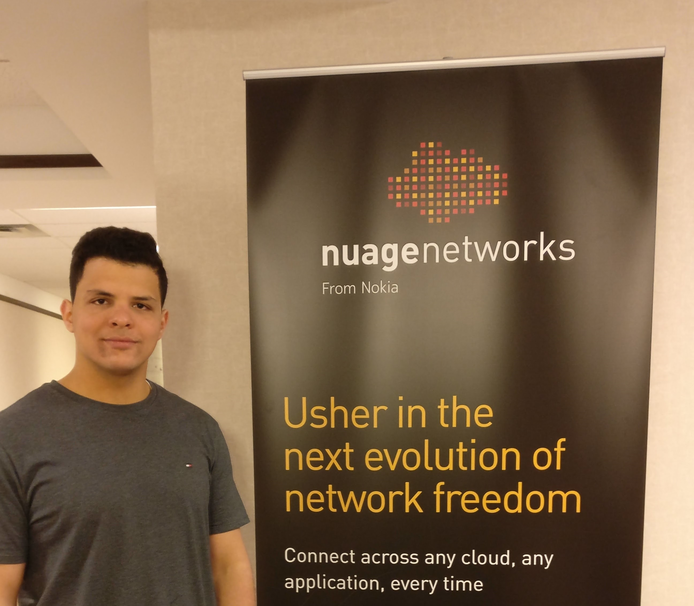

Experience
See where I worked

Nokia
Ottawa, OntarioJan 2018 - April 2018
Nokia Networks is a leader in the Telecommunications industry. At Nokia I worked on a newly co-founded product within the company. The product called Nuage enhance a new technology in the market called Network function visualization (NFV). NFV is a technology that allow enterprises to replace their expensive hardware network appliance and replace them with virtualized software that runs on general standard servers.
- Worked on JIRA tickets on a daily basis.
- Recreated and Fixed customer problems in Nokia’s Lab.
- Developed my knowledge of Network Function Virtualization.
- Developed bash and TCL scripts to extract tech-support files from customers' servers.

Bluedrop
St.John's, NewfoundlandJun 2017 - Sept 2017
Bluedrop provides workforce development solutions to help government and corporate customers improve employment outcomes and keep workers safe. I worked with the development of their web based platform, solve technical problems and develop clean code to solve technical bugs and develop platform improvements.
- Developed code using HTML5, JavaScript, Angular JS and Jasmine Unit test.
- Solve different bugs on the platform and add new features.
- Developed SQL migration scripts and Worked with AWS S3.
- Worked with Docker containers and project images.
- Experienced using JIRA, Codeship, Bitbucket and Git.
Verafin
St.John's, NewfoundlandSept 2016 - Jan 2017
Verafin provide solutions for international banks and credit unions to help them enhance their security systems. FRAML and FRAMLX is the solutiuon provided by verafin, these solutions provide fraud detection and anti-money laundering. I worked with international banks’ Technical Departments to resolve problemsand ensure redundant data transfer on daily basis.
- Worked with SaaS and Amazon AWS S3 Buckets.
- Used PostgreSQL and SQL Server Management Studios.
- Used PostgreSQL and SQL Server Management Studios.
- Worked in an Agile fast-based Environment.
- Advanced my experience with Java and attended software development meetings.

Enginnering Faculty, Memorial University
St.John's, NewfoundlandFeb 2016 - May 2017
I worked on aproject that was intended to improve students experiecne in a control system lab sessiosn. I worked on this project individaully with very minmual supervision. Initiated and completed the design of a Position and Speed Feedback Control System. The control system did include a microcontroller for the motor set and a Graphic user interface for users to work with and change PID algorithm parameters for easier system tunning.
- Advanced my C++ skills and Control Systems Knowledge.
- Designed the system’s circuit and PCB using Eagle CAD.
- Created a Graphic user interface using Java standard Libraries
- Developed my soldering skills and experience with Oscilloscopes, power sources.
Contact
Please feel free to contact me, and check out my social media accounts